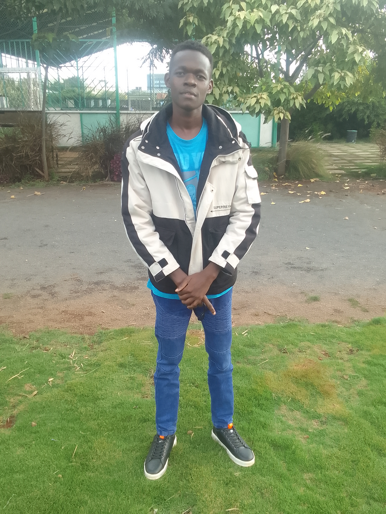
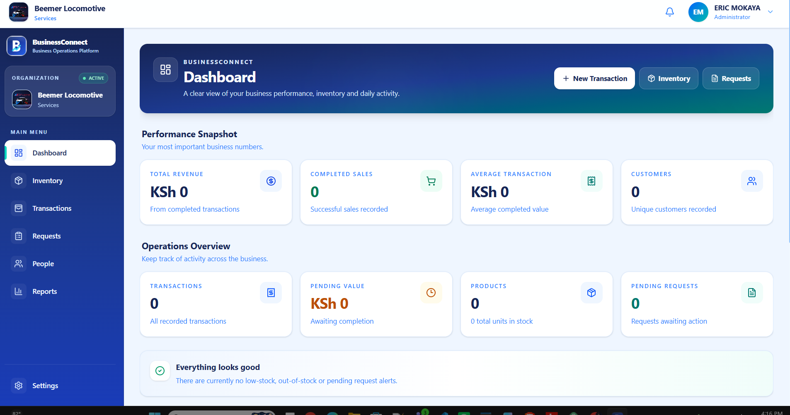

01
IT Support
Computer hardware, software installation, Windows systems, troubleshooting and user technical assistance.
I'm Eric Maiko, an ICT professional and digital solutions specialist with a practical focus on IT support, software development, web development, systems support and digital technology.
I build and support useful digital experiences across websites, applications, WordPress, online writing, blogging, digital content and personal branding.

IT Support · Software Development · Web Development · WordPress · Digital Content
My approach combines technical learning, practical project development, digital creativity and problem solving.
I am an ICT professional and digital solutions specialist with a Diploma in Information and Communication Technology and hands-on software development experience gained through the design and development of BusinessConnect, a responsive business operations management web application and Progressive Web App.
My technical foundation covers IT support, computer hardware and software troubleshooting, networking, database management, web development, programming, systems analysis, application support and cybersecurity fundamentals.
Beyond traditional ICT work, I am interested in practical digital work including WordPress, web design, online writing, blogging, digital content, personal branding and productivity solutions.
I enjoy taking a practical problem, understanding the requirements and turning it into a structured, accessible and useful technology solution.
I am particularly interested in opportunities where I can contribute technically, develop useful digital solutions and continue growing professionally.
A broad ICT and digital foundation covering technical support, development, systems, data, web, content and digital solutions.
Computer hardware, software installation, Windows systems, troubleshooting and user technical assistance.
Responsive applications, component-based development, application workflows and practical software solutions.
Responsive websites and web applications designed for desktop, tablet and mobile experiences.
Application support, system maintenance, user access, technical assistance and problem diagnosis.
Database management, MySQL, data processing and electronic records management.
LAN/WAN support, basic router and switch configuration and cybersecurity fundamentals.
Website structure, WordPress setup, page design, responsive layouts and practical website management.
Digital articles, blog content, informative writing, structured online content and audience-focused communication.
Practical use of technology to improve workflows, communication, information access and everyday business activities.
Professional online presence, portfolio development, digital identity and practical personal brand presentation.
Digital documents, presentations, spreadsheets, productivity tools and structured content creation.
Practical digital skills, technology learning, beginner-friendly training and knowledge sharing.
A real software project demonstrating practical application development, responsive design and problem solving.
BusinessConnect is a responsive business operations management platform and Progressive Web App that brings core business activities into one organized digital workspace.
I designed and developed BusinessConnect to demonstrate how a practical digital platform can organize business information, daily operations and management workflows through a responsive web interface.

Areas of practical learning and knowledge sharing covering technology, digital work, online presence, productivity and personal development.
Learn the foundations of professional website structure, responsive layouts, typography, accessibility and modern web presentation.
Practical WordPress skills covering website setup, pages, content management, customization and maintaining a professional online presence.
Building useful blog content, structuring articles, developing publishing habits and communicating ideas clearly online.
Practical digital writing for websites, blogs, professional profiles, educational content and online communication.
Developing a professional digital identity, portfolio, online presence and consistent presentation of your skills.
Practical computer, productivity, internet, digital communication and technology skills for everyday and professional work.
Practical learning around budgeting, financial organization, saving habits, digital financial tools and responsible money management.
Building practical digital habits, improving professional presentation and using technology to support career and freelance opportunities.
My experience combines software development, ICT education, technical capabilities and practical digital work.
Designed and developed a responsive business operations management web application and Progressive Web App.
ICT training covering computer hardware, software, networking, databases, programming, web development, operating systems, computer security and systems analysis.
Practical capabilities covering hardware and software installation, configuration and troubleshooting, networking, database support, system maintenance and information security.
Developing practical digital capabilities across responsive web design, WordPress, online writing, blogging, digital content and professional online presentation.
ICT professional training covering hardware, software, networking, databases, programming, web development, operating systems, security and systems analysis.
Kenya Certificate of Secondary Education (KCSE).
Kenya Certificate of Primary Education (KCPE).
Have an opportunity, project, technical challenge or digital idea? Let's connect and discuss how I can contribute.
I'm open to professional opportunities, technical projects, digital solutions, freelance work and meaningful collaborations.
I'm open to professional opportunities, technical projects, digital solutions, freelance work and meaningful collaborations.